电磁感应与交流电路（Electromagnetic Induction & AC Circuits）¶
Overview
本讲涵盖法拉第电磁感应定律、电感、RL/LC/RLC 电路、交流电路以及麦克斯韦方程组与电磁波。
法拉第电磁感应定律¶
磁通量与感应电动势¶
法拉第定律
楞次定律
当你将磁铁向线圈移动或移开时，磁力会阻止这种运动。
因此楞次定律要求你施加的力做正功。
同时，由于材料对感应电流的电阻，线圈材料中会产生热能。
你通过外力传递给闭合回路-磁铁系统的能量最终转化为这种热能。（暂时忽略作为电磁波辐射出去的能量）
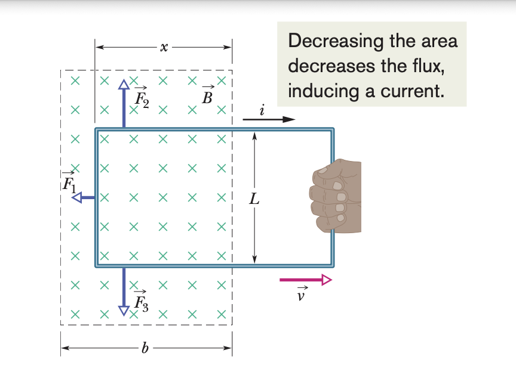
运动导体棒
法拉第定律的重新表述¶
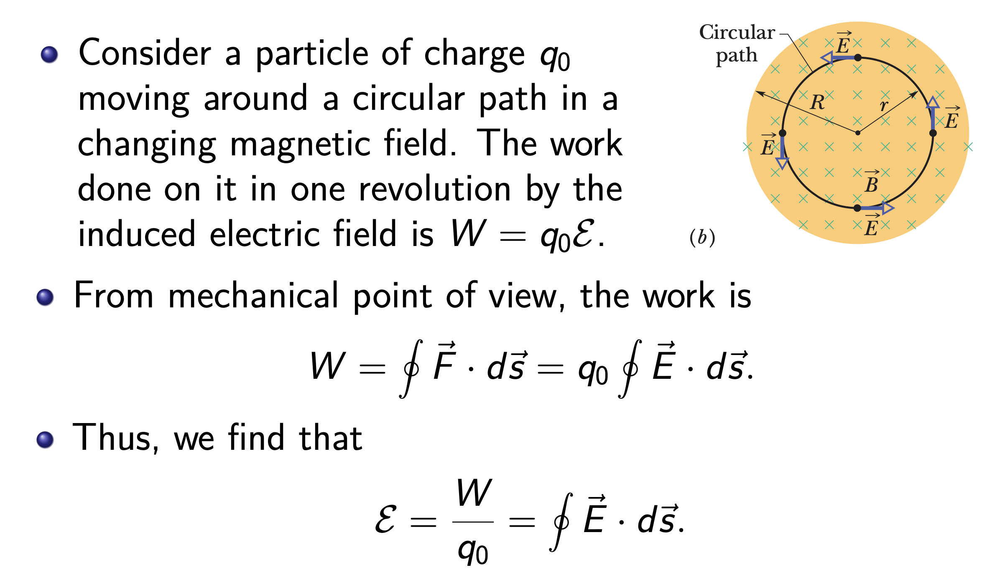
关键发现
感应电动势可以不需要电流或粒子来定义：
感应电动势是沿闭合路径对 \(\vec{E} \cdot d\vec{s}\) 的积分求和，其中 \(\vec{E}\) 是由变化磁通量感应的电场，\(d\vec{s}\) 是路径上的微分长度向量。
积分形式
通过斯托克斯定理转换为微分形式：
微分形式
重要
由感应产生的电场没有电势的意义。
电感与电感器¶
回顾螺线管¶
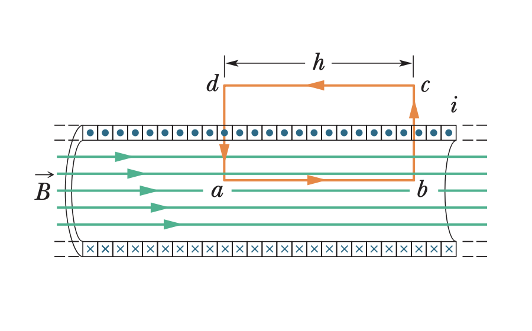
| 公式 | 表达式 |
|---|---|
| 磁场 | \(B = \mu_0 in\) |
| 磁通量 | \(\Phi_B = BA = \mu_0 inA\) |
| 电感 | \(L = N\Phi_B/i = \mu_0 n^2 lA\) |
长螺线管电感
如果螺线管长度 \(l\) 远大于其半径，电感近似为： \(\(L = \mu_0 n^2 lA = N^2(\mu_0 A/l)\)\)
其中 \(nl = N\)（总匝数）。
RL 电路¶
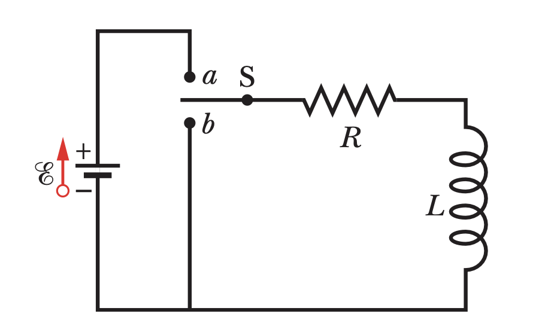
电感的作用
电感 \(L\) 类似于一个电压源。
RL 电路方程
RL 电路解
其中时间常数 \(\tau_L = \frac{L}{R}\)
磁场中的能量¶
磁场储能¶
磁场能量
磁场能量密度¶
单位体积磁场储能：
与电场类比
互感¶
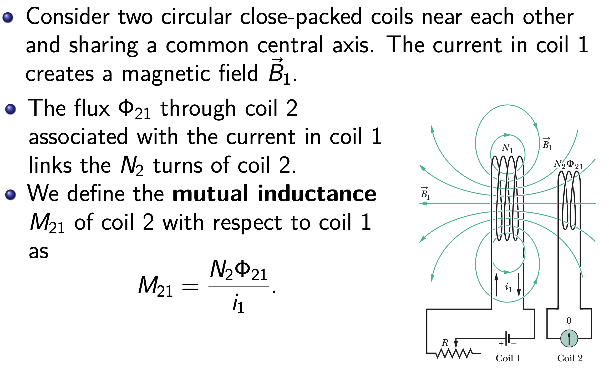
互感系数
耦合方程
矩阵形式：
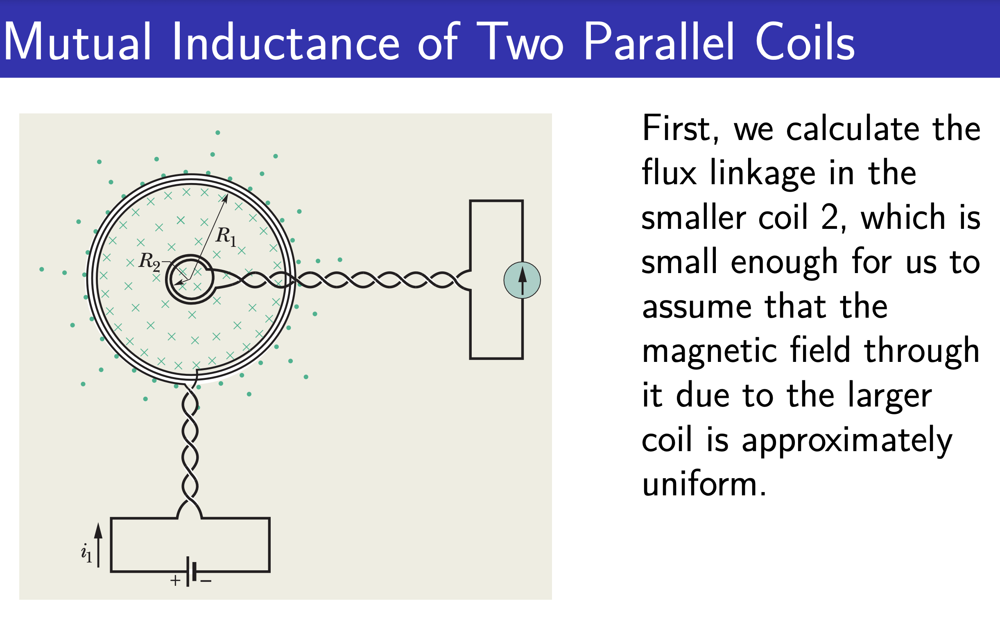
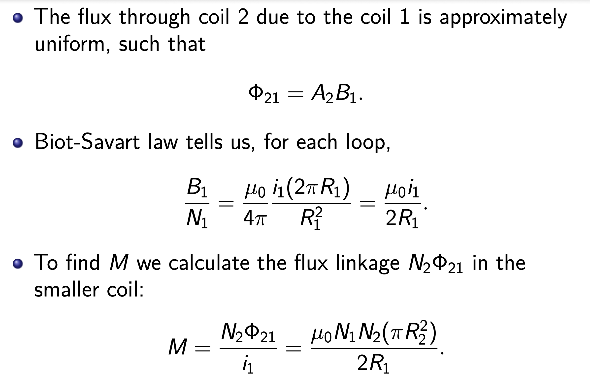
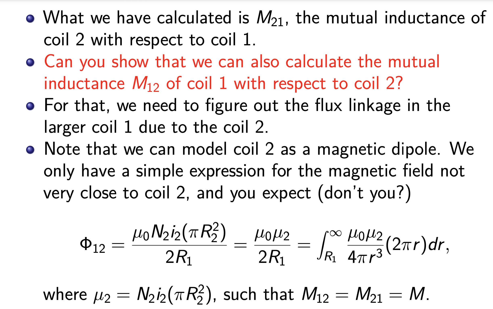
交流电路¶
LC 振荡¶
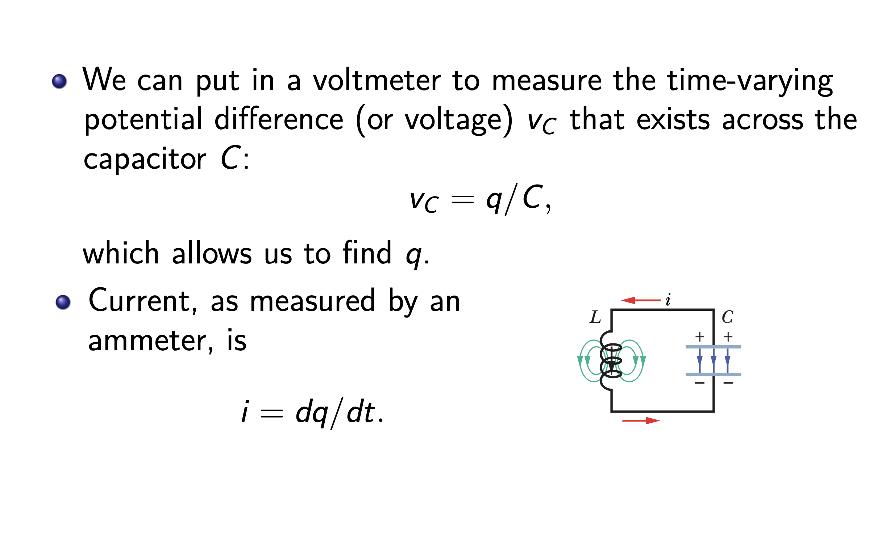
LC 振荡方程
解：\(q = A\cos(\omega_0 t + \phi) = Q\cos\left(\frac{1}{\sqrt{LC}}t + \phi\right)\)
初始条件：
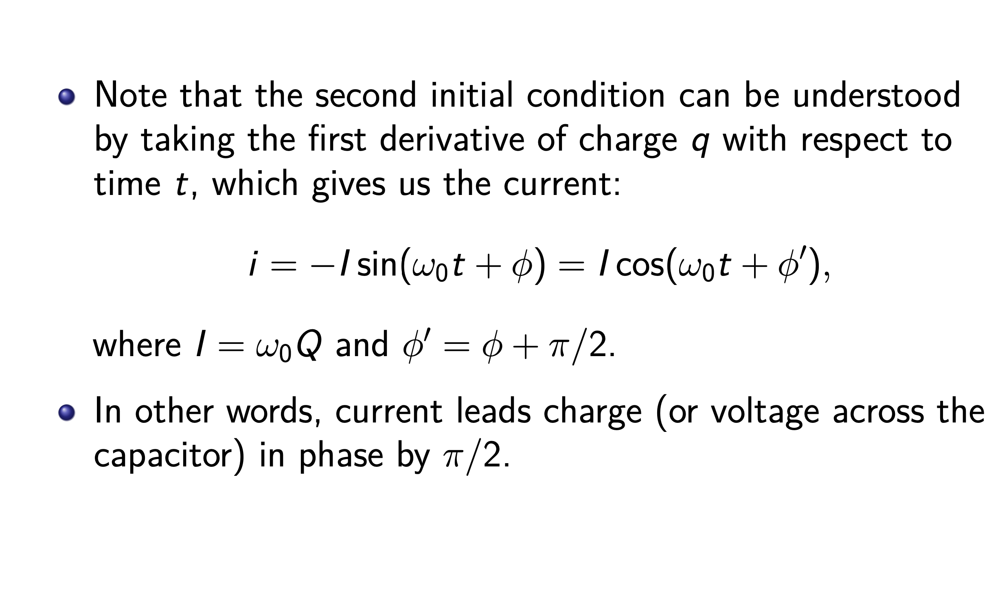
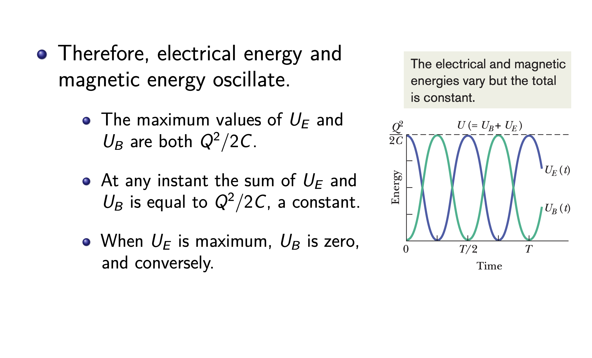
复数形式¶
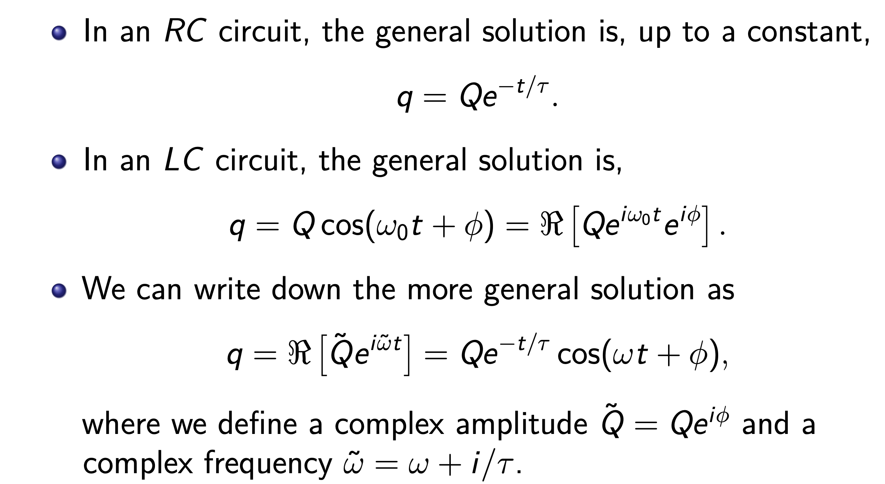
RLC 电路的阻尼振荡¶
有电阻 R 时
解：\(q = Qe^{-t/\tau}\cos(\omega t + \phi)\)
其中 \(\tau = 2L/R\)，\(\omega = \sqrt{\omega_0^2 - (1/\tau)^2}\)，\(\omega_0 = 1/\sqrt{LC}\)
提示
可用 ODE 方法或下图方法求解。
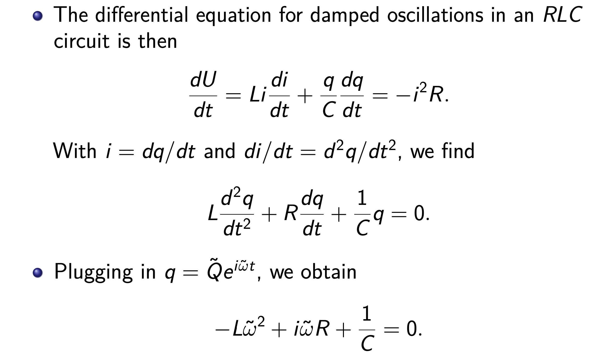
| 条件 | 名称 | 特点 |
|---|---|---|
| \(1/\tau < \omega_0\) | 欠阻尼 | 系统仍振荡，但振幅递减 |
| \(1/\tau > \omega_0\) | 过阻尼 | 只能找到虚数 \(\omega\)，系统不振荡 |
| \(1/\tau = \omega_0\) | 临界阻尼 | 系统最快返回平衡位置 |
工程应用
临界阻尼使系统最快返回平衡位置，这在工程设计中通常是理想的特性。
受迫振荡与交流电路¶
交流电的意义
- RLC 电路中的振荡如果有外部电动势补充电阻耗散的能量，就不会衰减
- 通过振荡的电动势和电流供能 —— 称为交变电流（AC）
- 这些振荡正弦变化，每秒反向 100 次（频率 \(f = 50\) Hz）
受迫振荡
当连接外部交变电动势时，电荷、电势差和电流的振荡称为驱动振荡或受迫振荡。
这些振荡总是发生在驱动角频率上。
三种简单电路¶
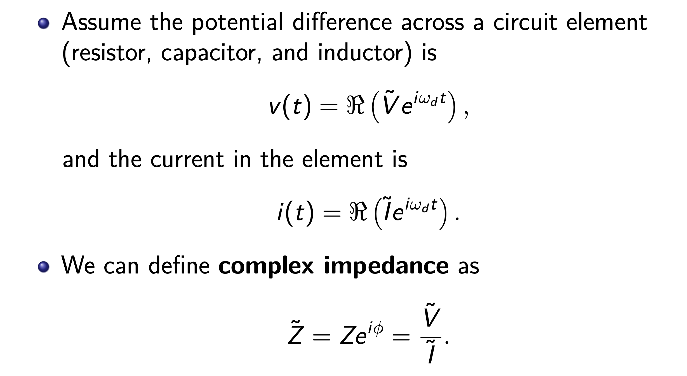
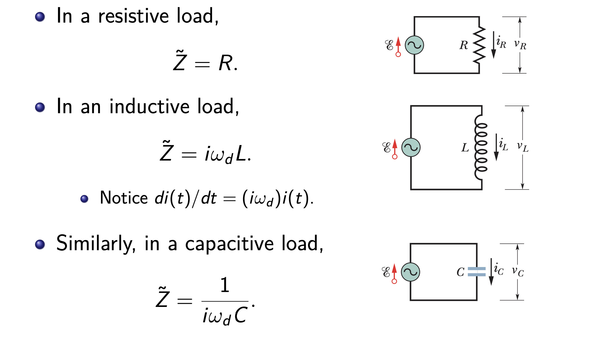
电感 L¶
电感阻抗
电容 C¶
电容阻抗
串联 RLC 电路¶
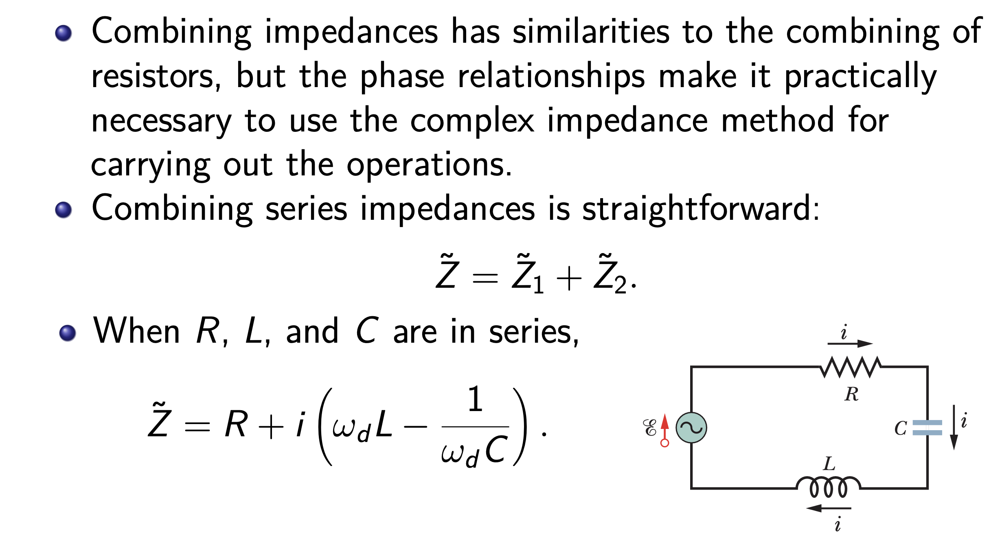
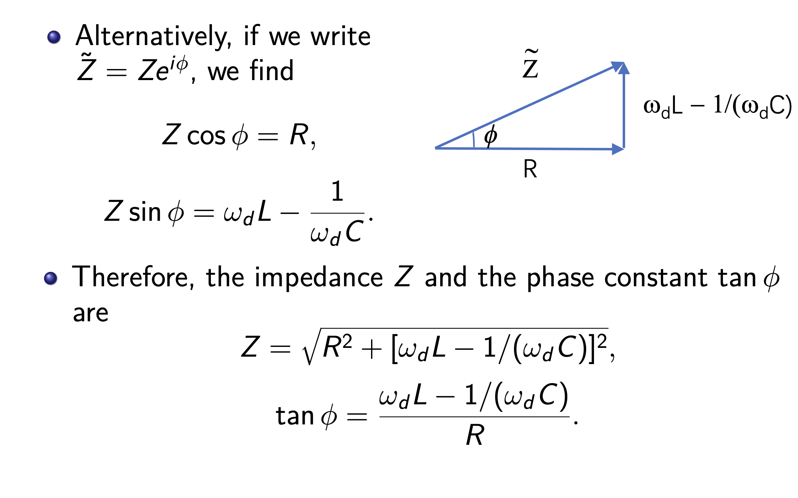
共振¶
共振条件
当 \(\omega_d = \omega_0\) 时，电路处于共振状态。
共振时的特点：
| 特性 | 描述 |
|---|---|
| 容抗 = 感抗 | $ |
| 电流振幅最大 | \(I = \mathcal{E}_m/R\) |
| 电流与电动势同相 | \(\phi = 0\) |
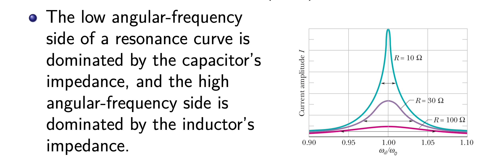
麦克斯韦方程组与电磁波¶
安培定律的修正¶
对法拉第定律应用散度
安培定律的问题
对安培定律应用散度： \(\(\nabla \cdot (\nabla \times \vec{B}) = \nabla \cdot (\mu_0\vec{J}) = \mu_0(\nabla \cdot \vec{J})\)\)
而 \(\nabla \cdot \vec{J} = -\frac{\partial\rho}{\partial t} = -\frac{\partial(\varepsilon_0\nabla \cdot E)}{\partial t} = -\nabla \cdot \left(\varepsilon_0\frac{\partial\vec{E}}{\partial t}\right)\)
这不一定为零！
麦克斯韦修正
麦克斯韦指出，可以通过修正安培定律来消除多余的散度： \(\(\nabla \times \vec{B} = \mu_0\vec{J} + \mu_0\vec{J}_d = \mu_0\vec{J} + \mu_0\varepsilon_0\frac{\partial\vec{E}}{\partial t}\)\)
位移电流的验证¶
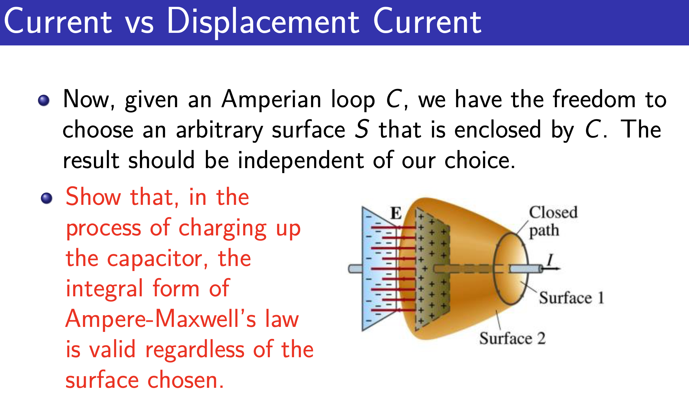
- 选择面 1 积分：\(E = 0\)，\(I_{enc} = I\)
- 选择面 2 积分：
- \(I_{enc} = 0\)
- \(\mu_0\varepsilon_0\frac{\partial E}{\partial t} = \mu_0 I/A\)
- \(\iint \mu_0\varepsilon_0\frac{\partial E}{\partial t} \cdot d\vec{A} = \mu_0 I\)
两种计算方式给出相同结果！
麦克斯韦方程组¶
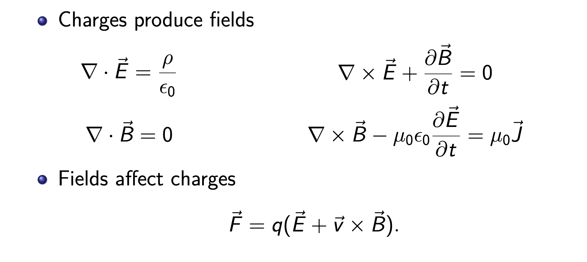
| 方程 | 名称 | 物理意义 |
|---|---|---|
| \(\nabla \cdot \vec{E} = \rho/\varepsilon_0\) | 高斯定律（电） | 电荷产生电场 |
| \(\nabla \cdot \vec{B} = 0\) | 高斯定律（磁） | 没有磁单极子 |
| \(\nabla \times \vec{E} = -\frac{\partial\vec{B}}{\partial t}\) | 法拉第定律 | 变化磁场产生电场 |
| \(\nabla \times \vec{B} = \mu_0\vec{J} + \mu_0\varepsilon_0\frac{\partial\vec{E}}{\partial t}\) | 安培-麦克斯韦定律 | 电流和变化电场产生磁场 |
电磁波¶
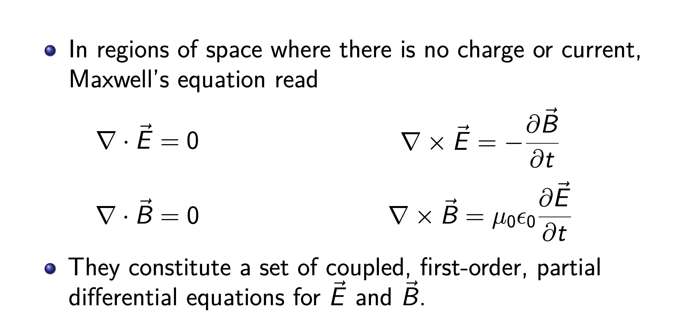
波动方程的推导¶
解耦：
利用矢量恒等式：
电磁波方程
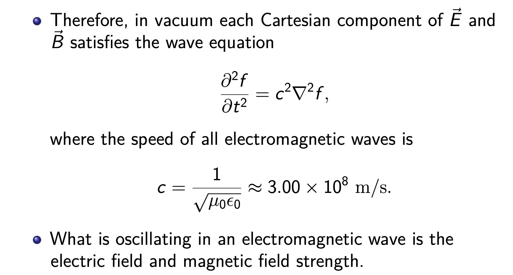
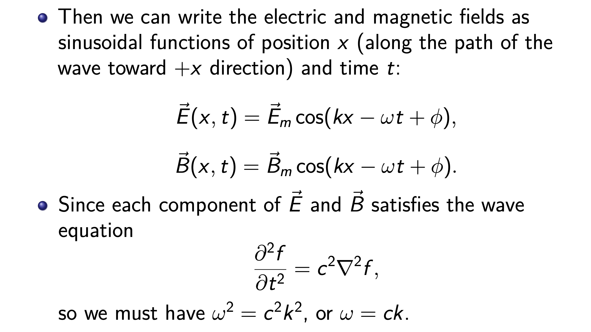
波的参数关系
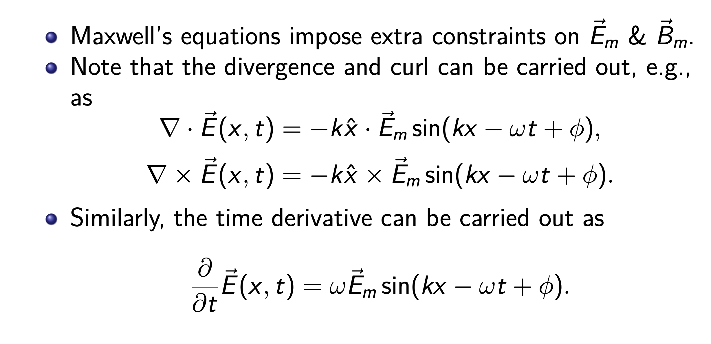
电磁波的性质¶
由 \(\nabla \cdot \vec{E} = 0\) 和 \(\nabla \cdot \vec{B} = 0\)：
由 \(\nabla \times \vec{E} = -\frac{\partial\vec{B}}{\partial t}\)：
E 与 B 的关系
其中 \(\hat{x}\) 是波传播方向的单位向量。
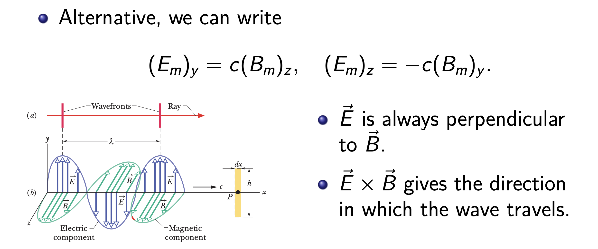
能量传输¶
能量密度相等
由 \(\vec{B} = \frac{1}{c}(\hat{x} \times \vec{E})\)： \(\(u_E = \frac{\varepsilon_0 E^2}{2} = \frac{B^2}{2\mu_0} = u_B\)\)
能流密度（坡印廷矢量）
平面波中单位面积能量传输率是总能量密度与电磁波速度的乘积： \(\(S = (u_E + u_B)c\)\)
平均强度
强度与距离的关系¶
点光源
当球面波前从各向同性点源 \(S\)（功率 \(P_s\)）向外传播时，波的能量守恒。
球面上的强度 \(I\) 随 \(r\) 减小： \(\(I = \frac{P_S}{4\pi r^2}\)\)
创建日期: 2023年11月13日 11:36:51